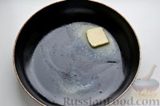
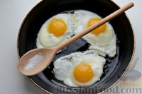
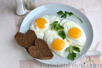

Яичница-глазунья
Простейшее блюдо, которое сможет приготовить
почти
каждый.
Список продуктов:
- Яйца - 2шт
- Масло Сливочное - 10г
- Соль - шепотка
Пошаговое приготовление:
На
Жарим яичницу-глазунью на минимальном огне примерно 3-4 минуты, до тех пор, пока белок полностью не схватится, желток должен остаться жидким. Чтобы желток не затянулся белой плёнкой, а оставался ярким, сковороду крышкой лучше не накрывать.
Незадолго до окончания времени приготовления солим яичницу, притом только белок, так как на желтке от соли останутся белые пятна.
Перекладываем готовую яичницу на тарелку при помощи широкой лопатки. Приятного апетита!